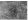
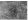
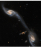
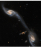
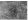
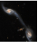
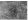
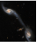

 



 





Our workshop on the stages of adaptation will guide you through the psychological and practical aspects of settling into a new world. Learn about the common phases of adaptation, from initial excitement to possible homesickness.

This orientation session is designed to help you embrace and settle into your new home. Learn practical tips for integrating into your new community, understanding local customs, and making your new planet feel like home.
Join our comprehensive seminar on relocating to different planets. This session covers the essential information on choosing the right planet for your needs, understanding the environmental and cultural differences, and preparing for the physical and logistical challenges of interplanetary travel. Expert speakers will provide insights.
Attend our briefing on the detailed schedules for upcoming relocations. This event provides an overview of the timelines, key dates, and procedural steps involved in the relocation process. Stay informed about the deadlines for application submissions, medical examinations, and pre-departure preparations to ensure you are ready for your journey.
This is a popup text.